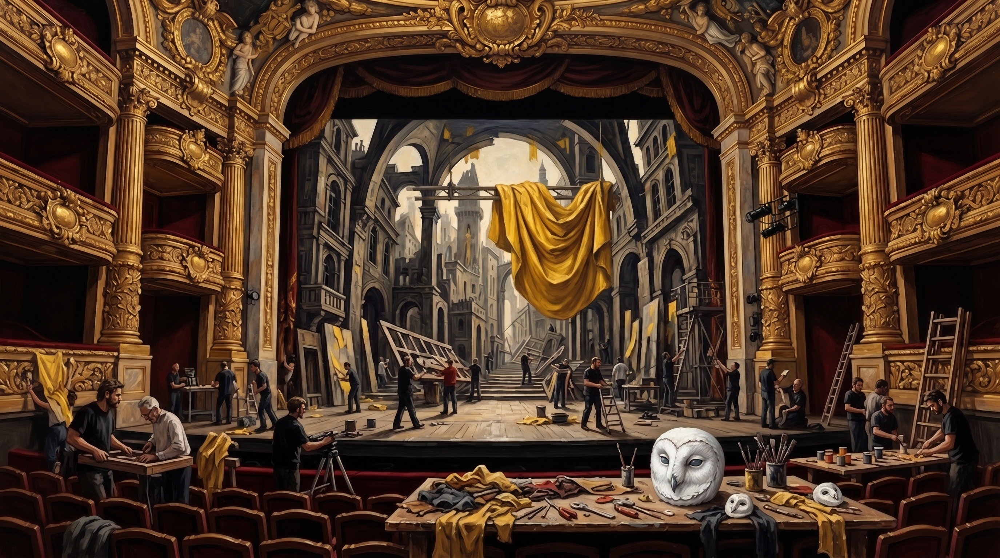

A Fundação LUME para Ciência e Cultura anunciou em 5 de setembro a participação da organização no financiamento de uma nova produção experimental apresentada em Paris. O projeto integra o Programa Artes & Percepção e reúne profissionais das artes cênicas, pesquisadores e consultores convidados.
A montagem trabalha com temas como memória, identidade, percepção e construção da realidade. Durante a preparação, a equipe desenvolveu um cenário inspirado em representações de cidades imaginárias e utilizou objetos cênicos associados a diferentes estados de atenção.
Registro fotográfico

A fotografia foi registrada durante a preparação do cenário, antes do início dos ensaios. A equipe trabalha sobre uma representação cenográfica de uma cidade ficcional, utilizando elementos arquitetônicos deliberadamente distorcidos e tecidos em tons de amarelo.
Informações da produção
- Local: Palais Garnier, Paris
- Estreia prevista: 09.10.2026
- Apoio: Fundação LUME para Ciência e Cultura
- Programa: Artes & Percepção
- Registro fotográfico: FLC-PAR-2026-1003
A Fundação descreve a produção como iniciativa artística independente. O comunicado não relaciona o projeto a pesquisas médicas ou energéticas. A fotografia foi publicada como material de divulgação da parceria.